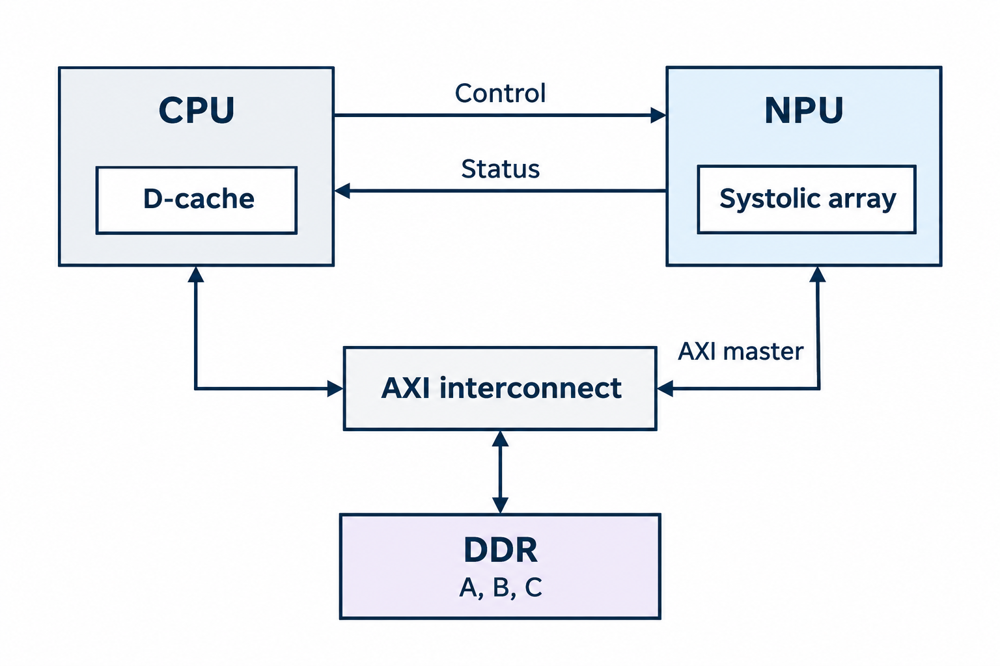
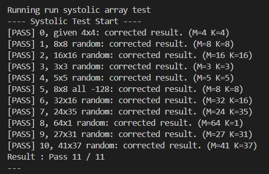

Lab 5 : Systolic Array Integration and Cache Coherence#
Goal of this lab#
Extra File#
Platform/
└── sw/
└── project/
├── lab5_api.h/.cc
└── systolic_array_test.h/.cc
Platform/
└── sw/
└── tflm_patches/.../conv.h
Introduction#
After finishing lab 3-2, the implementation of a systolic array for GEMV, we are going to integrate it into our SoC platform. The integrated design will also serve as a starting point for accelerating convolution.
To successfully integrate your systolic array, you will design custom-instruction operations that configure and start GEMV computations.
In previous Labs, we provide you CBO operations to avoid cache coherence problem. In this lab, you may still use CBOs while validating Basic Exercise 1. In Basic Exercise 2, GEMV must remain correct without software CBO assistance in its execution path; hardware must provide the necessary coordination.
Basic Exercise 1 - Integrate Systolic Array - 30%#
Software places matrix A and vector B in memory and invokes the NPU through custom instructions. The NPU accesses the operands through its AXI master interface, performs GEMV using the integrated systolic array, and makes the resulting vector C available in memory for subsequent CPU reads.


Get started#
Now you are ready to do the integration! Create a new copy project folder of Lab4. We use the Lab4 environment. You can also reuse your Lab 3-2 modules like TPU, PE, etc., (board_bram), in your project. You are allowed to add some supporting modules in Platform/hw/srcs.
It’s totally fine if you want to use something else instead of using LAB 3-2 BRAM buffer, as long as you can integrate your systolic array into the NPU and pass the tests.
Testing#
After integrating the accelerator and defining how software configures and starts it, it is nice to do some verification now. We provide a systolic_array_test before you really dive into the complicated inference of the MobileViT model.
Important
A is a row-major M × K signed int8 matrix, B is a K-element signed int8 vector, and C contains M signed int32 results. Public and hidden GEMV tests satisfy 1 ≤ M, K ≤ 254 and ceil(M / 4) × K ≤ 1024. Test dimensions and values may differ from the public examples.
Important
The complete FPGA design must achieve WNS >= 0 ns for setup timing and WHS >= 0 for hold timing in the final post-route Design Timing Summary generated by Vivado.
Use the provided clock and timing constraints. Do not reduce the required clock frequency or relax timing constraints to satisfy this requirement. A synthesis timing estimate or a timing report for an isolated accelerator module is not sufficient.
Passing functional tests on the FPGA does not waive this timing requirement.
In
proj_menu.cc, includesystolic_array_test.hor declare extern void systolic_test();, then add a menu entry that callssystolic_test().
// For example
MENU_ITEM('s', "run Lab5 tests", systolic_test)
Design your
lab5_api.h/cc. We have provided examples in the file, but you can make your own design to support your work.
Important
Do not modify systolic_array_test.h/.cc and the do_gemv_test declaration.
Important
In this part, you can still use CBO extension to pass the test. (You may need it)
void do_gemv_test(int M, int K, const int8_t* matA, const int8_t* matB, int32_t* matC);
A successful run reports that all provided GEMV cases passed. The following image shows an example:


Basic Exercise 2 - Hardware Cache Coherence - 30%#
Because our NPU directly access memory through AXI without passing through the D-cache, you may encounter cache coherence problem under several situations.
We provide you some scenarios to think about:
Scenario |
Problem |
|---|---|
A/B are dirty cache lines newly written by the CPU |
The NPU reads the old A/B from DDR |
C is a clean cache line previously read by the CPU |
The NPU completes writing C, but the CPU continues to read the old C |
C is a dirty cache line modified by the CPU |
The old C is later written back, overwriting the NPU’s new result |
To solve cache coherence problems without CBO, we use hardware to deal with it.
This section is a little bit complex, you may need to trace codes of CPU(I/O to Backend_top), Backend_top, dcache_pro, (MEM) in Platform/hw/srcs/sources_1/imports to understand how they work and interact with each other. And you may need to modify them or add new modules in the same folder and use Block Design.
Here is a guideline of BD:
For every GEMV operation, the NPU must use the latest A and B values written by the CPU. Once the operation completes, CPU reads of C must return the NPU’s results, and older cached values must not overwrite C later. Hardware must provide these guarantees without software cache-maintenance operations in the Lab5 GEMV execution path. You may choose how to coordinate the CPU cache and NPU.
One possible design is to let the NPU request D-cache writeback or invalidation when needed around its AXI memory accesses. Other hardware approaches are also valid.
After you finish your work, you can still use systolic_array_test to test your work. But before you test, make sure you delete or comment all CBO extension use.
Important
During testing, we will remove cbo.h before compiling, so you must ensure it compiles without any errors.
Advanced Exercise - Accelerate Convolution - 20%#
Now you have a working systolic array that can do GEMV correctly, it’s time to accelerate convolution.
We provide conv.h with the code used to measure Counter 2. You may modify this file to integrate your systolic array and implement your acceleration method. Keep the Perf Start and Perf End code unchanged and in their original locations.
Restrictions#
No CBO operations. We will remove
cbo.hbefore compiling.You may have noticed that dynamic memory allocation, such as using new or malloc, is not supported in our SoC. Therefore, we recommend declaring fixed-size arrays.
Hints#
im2col: One possible approach is to reorganize input patches for matrix-based computation.
Tiling: Consider dividing the computation into smaller tiles when the full workload does not fit the storage available to your design.
Input offset: Quantized convolution includes an input offset. Make sure your accelerated result matches the reference computation, including at padded boundaries.
Note
Other than the shapes of convolution, it is also crucial to handle parameters such as stride, dilation and padding correctly to ensure the matrices are constructed properly for the convolution.
For simplicity, in this lab, you can ignore batch and group parameters, assuming both are set to 1. This assumption will still allow you to pass all the required tests.
Evaluation Criteria#
We will test the performance of your implementation based on the MobileViT model provided in lab4.
Also, to earn the score for this part, you still need to complete the TFLM inference, verification, and cycles without any failures.
Important
You will get 0% if you can’t pass the TFLM inference, verification, and cycles or didn’t meet the requirement.
result example:
==============================================
Counter | Total | Starts | Average
---------+-------------+--------+-------------
0 | xxxxxxx | xx | xxxxxxx
1 | xxxxxxx | xx | xxxxxx
2 | xxxxxxxxx | xx | xxxxxxx
3 | 0 | 0 | n/a
4 | 0 | 0 | n/a
5 | 0 | 0 | n/a
6 | 0 | 0 | n/a
7 | 0 | 0 | n/a
8 | 0 | 0 | n/a
9 | 0 | 0 | n/a
==============================================
Cycles: xxx
Time (50000000 Hz): xxx ms
---
Average Cycles of Counter 2 |
> 150M |
150~15M |
15~10M |
< 10M |
|---|---|---|---|---|
Score |
0 |
10 |
15 |
20 |
Questions in the Demo - 20%#
You will be asked several questions about the concepts covered in this lab and your implementation. This section accounts for 20% of the total lab score.
Submission#
Please organize your submission files into a zip archive structured as follows:
aaml-lab5-[id].zip
└── aaml-lab5-[id]/
├── hw/
| └── srcs/
| ├── NPU.v
| ├── {TPU, PE}
| ├── {any other required modules}
| └── sources_1/
| ├── imports/
| | ├── CPU.v
| | ├── Backend_top.v
| | ├── dcache_pro.v
| | └── {any other required modules}
| └── bd/
| ├── MMIO.bd
| └── {any other required modules}
└── sw/
├── lab5_api.h/.cc
├── conv.h
└── {any other required headers or source files}
Important
TAs should be able to run your project without any modification. If TAs cannot compile or run your code, you won’t receive any points, even if you passed the DEMO. Also, PLAGIARISM is not allowed.